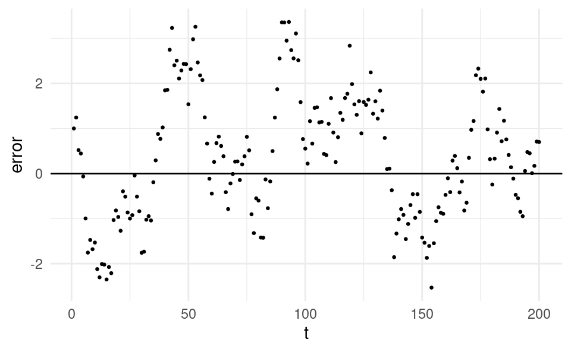
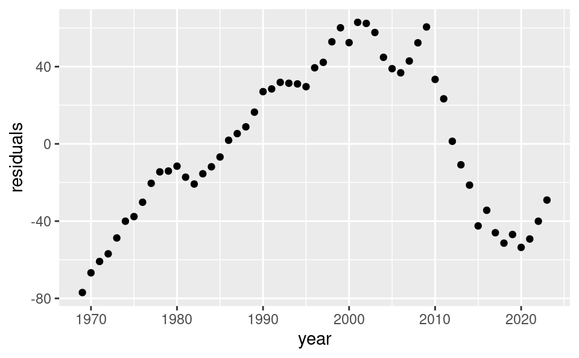

We are now interested in performing inference for our model. By inference we mean inferring the properties of the population regression model generating our sample data. With model inference we can answer questions like:
How precise are our estimates b_0 and b_1?
What are the confidence intervals around b_0 and b_1?
How can we perform hypothesis tests on b_0 and b_1?
In order to perform model inference, we need to make some assumptions about our model. There are 6 assumptions in total, which we will discuss in the following sections.
8.1 Assumption 1: Linear in Parameters
Assumption 1: Linear in Parameters
In the population model, the dependent variable Y_i is related to the independent variable X_i and the error \varepsilon_i according to: Y_i=\beta_0 + \beta_1 X_i + \varepsilon_i
This assumption means that the process that generates the data in our sample follows this model. That is, Y_i has a linear relationship with X_i and the values Y_i are generated according to the line \beta_0 + \beta_1 X_i plus an error term \varepsilon_i.
An example of something that would violate this is if the true population model was something non-linear like:
Y_i=\exp\left(\beta_0\right) X_i^{\beta_1}\exp\left(\varepsilon_i\right)
with X_i>0 for all i. If this were the true model, it would not be the end of the world. We could take the natural log of both sides to get:
\ln\left( Y_i \right)=\beta_0 + \beta_1 \ln\left( X_i \right)+\varepsilon_i
This transformed model satisfies assumption 1. So if we transform our data into logs, we can still use the simple linear regression model.
8.2 Assumption 2: Random Sampling
Assumption 2: Random Sampling
We have a random sample of size n, \left(\left( x_1,y_1 \right),\dots,\left( x_n,y_n \right)\right) following the population model in Assumption 1.
This assumption means that the sample of data we observe were generated according to the model Y_i=\beta_0+\beta_1 X_i +\varepsilon_i. The values of y_i that we observe are related to the unknown population parameters, observed x_i and the unobserved error \varepsilon_i according to \beta_0+\beta_1x_i +\varepsilon_i, where \varepsilon_i is independent across observation i.
A crucial part of this assumption is the independence of the error terms across observations. For that reason this assumption is also called the independence assumption.
With cross-section data, there could be dependence in \varepsilon_i between people in the same household/town/industry. With time-series data, there could be dependence in \varepsilon_i in subsequent time periods.
Violations of this assumption are much more common with time series data. An example of this assumption beind violated can be seen in the figure below, which plots the errors against time:
Show code generating the plot below
set.seed(5727)nT <-200# number of time periodsdf <-data.frame(t =1:nT,y =0,x =runif(nT, 10, 12),e =0)df$e[1] <-1df$y[1] <-1# Loop over time periods with a first-order autocorrelation in the error:for (i in2:nT) { df$e[i] <-rnorm(1, 0, 0.5) +0.95* df$e[i -1] df$y[i] <-0.0001* df$x[i] + df$e[i]}library(ggplot2)ggplot(df, aes(t, y)) +geom_point(size =0.5) +geom_abline(intercept =0, slope =0) +theme_minimal() +ylab("error")

We observe a clear pattern in the errors: if the error is positive in one time period, it’s very likely to be positive in the following time period. Similarly, if the error is negative. If the errors were independent, the value of the error in any given time period should not depend on what the value of the error was in the previous period.
Let’s compare what the errors would look like over time if they were independent:
Here we just see a random cloud of points. The error in any time period does not appear in any way related to the value of the error in the previous time period.
Later in this course we will learn how to formally test for correlation in the residuals over time. But now, let’s learn how to make a plot of the residuals in R in order to visually inspect this model assumption. I would like to stress that this approach only works with time-series data. With cross-sectional data we cannot plot the residuals over time, because all subjects in cross-sectional data are surveyed at the same point in time.
As an example we return to the Netherlands GDP and exports data from Chapter 7.
The first thing we need to do is read in the data and estimate the regression model. This is the same as in Chapter 7. When we estimate the regression model, we will assign it to an object in our environment so we can access the residuals from the model. Let’s assign the model to m (“M” for model):
df <-read.csv("nl-exports-gdp.csv")m <-lm(gdp ~ exports, data = df)
Looking at our environment we can see that m is a list. If we click on it in RStudio we can see all the different things stored in this list, such as the coefficients, the residuals and the fitted values. There are 12 objects in total, but we will only use some of these in this course.
We can also list all the things stored in m by using the ls() command:
Recall that to access objects in a list we also use the dollar symbol (the extraction operator), just like with a data.frame. So to access the residuals, we can use m$residuals:
We then plot the residuals over time. We use the year variable as the time variable:
ggplot(df, aes(year, residuals)) +geom_point()

We can see that the residuals in a period clearly depend on the value in the previous period. Therefore the residuals are not independent and violate assumption 2! Later in this course we will learn how to formally test for this violation, and how to correct for it.
8.3 Assumption 3: Sample Variation in the Explanatory Variable
Assumption 3: Sample Variation in the Explanatory Variable
The sample outcomes \left( x_1,\dots,x_n \right) are not all the same value.
A simple explanation for this assumption is that we need it to avoid dividing by zero when calculating the sample regression coefficients. Recall the formula for the slope coefficient:
b_1=\frac{s_{X,Y}}{s_X^2}
If all the values \left( x_1,\dots,x_n \right) in the sample were the same value, then the sample variance of X would be zero, i.e. s_X^2=0. If s_X^2=0, we would be dividing by zero in the formula for the sample regression slope.
In the example plot below, all the values of x are equal to 10. The sample variance is zero and we cannot estimate the regression slope.
We can easily check whether this assumption holds with our data in R by calculating the standard deviation of our x variable. If the standard deviation is zero, all values are the same and the assumption is violated. If the standard deviation is positive, there are at least some different values and the assumption holds.
Although we only need just one value to be different to be able to estimate the regression model, more variation in the x variable will be better for our model.
8.4 Assumption 4: Zero Conditional Mean
Assumption 4: Zero Conditional Mean
The error \varepsilon_i has an expected value of zero given any value of the explanatory variable, i.e.~\mathbb{E}\left[ \varepsilon_i|X_i \right]=0 for all X_i.
An implication of this is that the error term is uncorrelated with the explanatory variable.
Let’s consider some examples of when this assumption would be violated. The first is a model trying to explain ice cream sales (Y) with fan sales (X). Ice cream sales are influenced by temperature. Because temperature is not included in the model (is not the X variable), temperature is included in the error, \varepsilon. But temperature is also correlated with fan sales, so \varepsilon is correlated with X. Therefore \mathbb{E}\left[\varepsilon_i|X_i\right]\neq 0, a violation of the zero conditional mean assumption. This can bias the estimation of \beta_1. The true \beta_1 should equal zero: fan sales doesn’t cause ice cream sales. However, if we were to estimate this model with data we would estimate b_1>0 as we observe a (spurious) correlation between ice cream sales and fan sales.
Another example is test scores (Y) and classroom size (X) that we saw in Chapter 5. Test scores are influenced by socioeconomic status, which is higher in urban areas. So the degree of urbanization is included in \varepsilon. But urban areas also have classrooms with more students, so \varepsilon is correlated with X. The true \beta_1 should be negative (smaller classrooms improve test scores) but we would estimate b_1>0. Estimation is biased again!
Non-linearities in the relationship between X and Y can also violate the zero conditional mean assumption \mathbb{E}\left[ \varepsilon_i|X_i \right]=0. Consider the following plot:
At x=75, the average value of the error term is negative, whereas at x=125, the average value of the error term is positive. Under the zero conditional mean assumption, the average value of the error should be zero at all values of X, so this would be a violation of this assumption.
8.5 Assumption 5: Homoskedasticity
Assumption 5: Homoskedasticity
The error \varepsilon_i has the same variance given any value of the explanatory variable. In other words:
\text{Var}\left( \varepsilon_i| x_i \right)=\sigma_\varepsilon^2
Homoskedasticity means that the variance of the errors is the same for small values of x and large values of x. “Skedasticity” comes from the Ancient Greek work σκεδάννυμι (skedánnymi) which means to scatter or disperse. So homoskedasticity litterly means “same dispersion”. A violation of homoskedasticity is called heteroskedasticity, which means “different dispersion”.
Let’s take a look at a scatter plot of data that violate the homoskedasticity assumption:
The variance of the residuals are small at low x and large at high x.
Let’s learn how to visually inspect our data for heteroskedasticity in R (in a later chapter we will learn how to formally test for it). We will use the advertising and sales data again.
We first obtain the residuals from our estimated model, just like we did when we were testing assumption 2:
df <-read.csv("advertising-sales.csv")m <-lm(sales ~ advertising, data = df)df$residuals <- m$residuals
We then plot the residuals and the x variable against each other:
The dispersion in the residuals appears to be increasing in the x variable. This is evidence of heteroskedasticity, a violation of assumption 5.
When we have a violation of homoskedasticity, our estimates of \beta_1 are not biased but we can no longer perform inference (obtain confidence intervals or perform hypothesis tests). In a later chapter we will learn how we can correct for heteroskedasticity.
8.6 Assumption 6: Normality
Assumption 6: Normality
The distribution of \varepsilon_i conditional on x_i is normally distributed.
This means that the distribution of the error terms conditional on the X variable should have a symmetric bell-curve shape:
This assumption, combined with assumptions 4 and 5 implies:
\varepsilon_i | x_i \sim \mathcal{N}\left( 0,\sigma_\varepsilon^2 \right)
In words: \varepsilon_i conditional on x_i follows a normal distribution with a zero mean and variance \sigma_\varepsilon^2.
Let’s take a look at an example scatter plot of X and Y of data that violate this assumption:
We can see that the errors are not symmetric around the regression line. They are positively skewed. Errors below the regression line (negative values) are closer together, whereas above the regression line (positive values) they are more dispersed.
8.7 Model Assumptions Summary
In short the model assumptions to perform inference are:
The population model is Y_i=\beta_0 + \beta_1 X_i + \varepsilon_i.
We have a random sample of size n, \left(\left( x_1,y_1 \right),\dots\left( x_n,y_n \right)\right) following the population model, with the values \left(x_1,\dots,x_n\right) not all taking the same value.
The errors conditional on x are normally distributed with a zero mean and constant variance: \varepsilon_i|x_i\sim \mathcal{N}\left( 0,\sigma_\varepsilon^2 \right).
We can only perform inference when all model assumptions hold. Later in this course we will learn some techniques to deal with some violations of these assumptions.